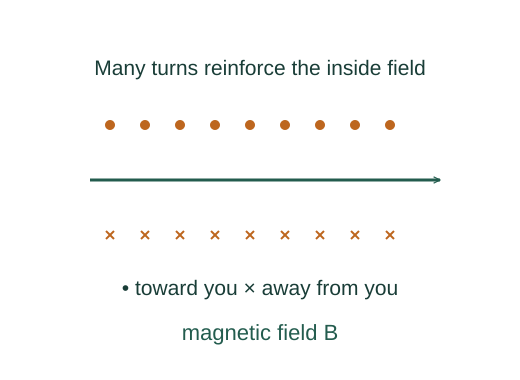

Derive inductance and magnetic energy storage
Current in a coil produces linked magnetic flux. A changing current changes that flux and induces a back emf. Work against this back emf stores energy in the magnetic field.
What the symbols mean
L: inductance (H); I: current; NΦB: total flux linkage; UB: stored magnetic energy.
When this applies
Linear inductor with fixed geometry and constant L, negligible resistive losses for the stored-energy calculation.
Developing the argument

Define inductance through flux linkage
In a linear magnetic environment, the total linked flux is proportional to the coil current.
Apply Faraday’s law
Differentiate the linkage. The minus sign describes the induced emf opposing the current change; under passive voltage convention the terminal voltage is vL = L dI/dt.
A closer lookWhere does this induced emf come from? ↗Faraday’s law, Lenz’s law, and motional emfCompute the storage power
The power supplied against the back emf is vLI. Multiplying by dt gives the differential energy stored.
Integrate from zero current
For constant L, integrating the linear function of I gives the factor one half.
A worked example
An ideal 0.20 H inductor carrying 3 A stores 0.90 J. Current cannot jump instantly with finite applied voltage in this ideal model.
Derivation behind this calculation ↗A point to keep straight
A real coil also has resistance and may have nonlinear core behaviour. Then electrical input need not all become recoverable magnetic energy.
Check the assumptions and derivation ↗